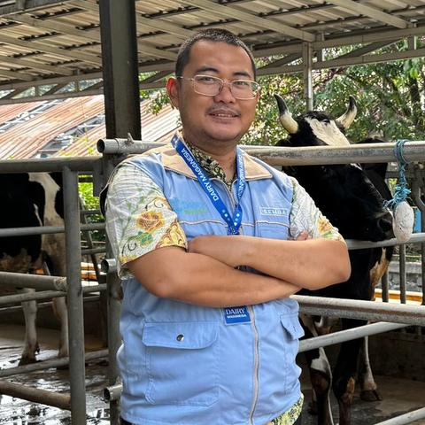
Tentang Kami
Bagaimana menjaga produktivitas sapi saat biaya pakan terus naik?
Di tengah tingginya biaya pakan dan ketidakstabilan bahan baku, Dairy Maggnesia dikembangkan sebagai pakan konsentrat sapi perah berbasis riset dengan mengeksplorasi pemanfaatan minyak larva Black Soldier Fly (BSF) untuk mendukung kebutuhan nutrisi ternak dan penggunaan sumber daya yang lebih berkelanjutan.
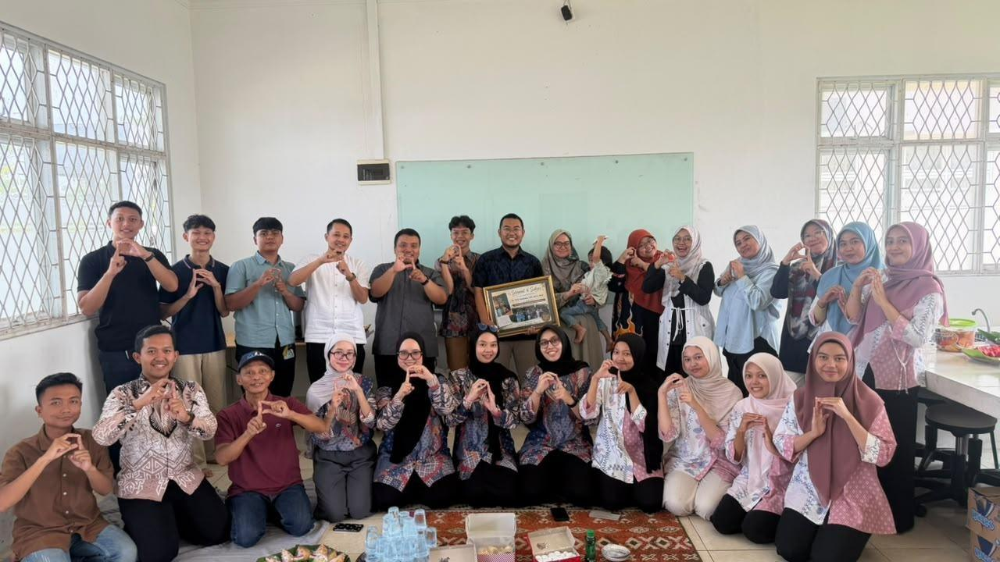
Visi
Berkontribusi dalam ketahanan pangan nasional melalui optimalisasi pakan lokal yang berkelanjutan.
Misi
- Memperkuat pengembangan Maggnesia melalui kolaborasi berbagai disiplin ilmu.
- Mengembangkan riset dan inovasi terkait kandidat bahan pakan lokal berkelanjutan.
- Mendorong hilirisasi dan pengembangan produk.
- Mengembangkan diversifikasi produk pakan dan pangan alternatif.
- Membangun entitas bisnis lokal yang berdaya saing global.
Perjalanan Kami
Dari Maggnesia menuju Dairy Maggnesia
Pengembangan Maggnesia tidak dimulai dari sapi perah. Riset sebelumnya mempelajari pemanfaatan maggot BSF dalam pakan unggas.
Pengalaman tersebut kemudian menjadi pijakan untuk mengembangkan inovasi bagi ternak ruminansia. Dari proses inilah Dairy Maggnesia dikembangkan dengan fokus pada pakan konsentrat sapi perah.
2016–2020
Tahap yang dijalani
Tahap 1 dari 5
Membangun Dasar Riset Maggnesia
Penguatan pengetahuan dan kompetensi dalam pengembangan pakan lokal berkelanjutan berbasis maggot BSF.
- Tahap yang dijalani
Penguatan pengetahuan dan kompetensi dalam pengembangan pakan lokal berkelanjutan berbasis maggot BSF.
- Tahap yang dijalani
Riset bergerak ke tahap yang lebih aplikatif melalui pengembangan dan pengujian ransum berbasis maggot BSF pada ayam lokal.
- Tahap yang dijalani
Pengembangan formulasi konsentrat sapi perah, dilanjutkan dengan pengujian kualitas pakan, pengujian laboratorium, dan pengamatan awal pada ternak.
- Tahap yang dijalani
Tahap pengembangan yang mencakup pengujian performa ternak, evaluasi ekonomi, uji pengguna bersama peternak mitra, penyusunan kemasan dan panduan penggunaan, serta persiapan produksi bersama mitra industri.
- Rencana pengembangan
Rencana pengembangan diarahkan pada produksi terbatas, registrasi produk, promosi, serta perluasan distribusi melalui mitra industri dan peternak.
Tim Kami
Orang-orang di Balik Dairy Maggnesia
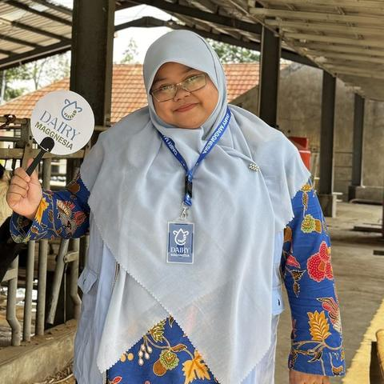
Tera Fit Rayani, S.Pt., M.Si.
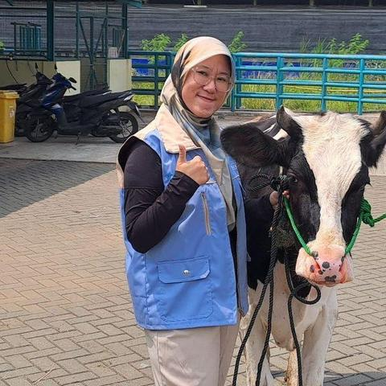
Annisa Hakim, S.Pt., M.Si.
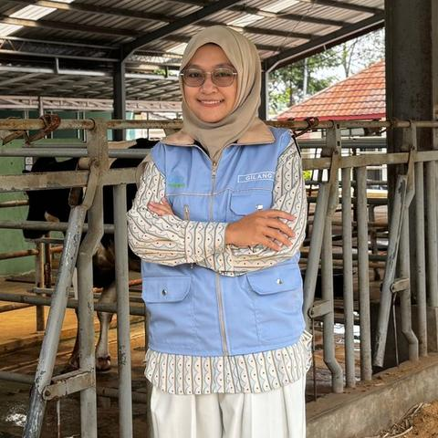
Gilang Ayuningtyas, S.Pt., M.Si.
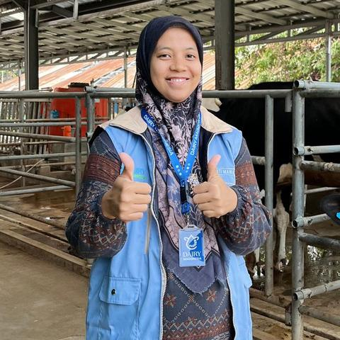
Siti Mawaddah, S.Pt., M.Si.
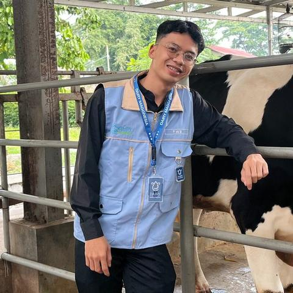
Fikri Wibiksana, S.P.
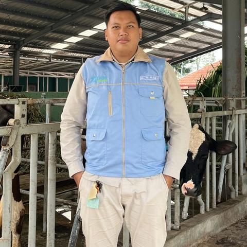
Maulana Nasrul Hady
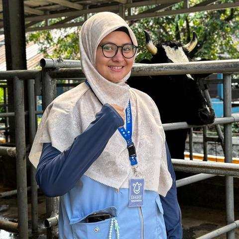
Annisa Oktavia Rini, S.Pt., M.Si.
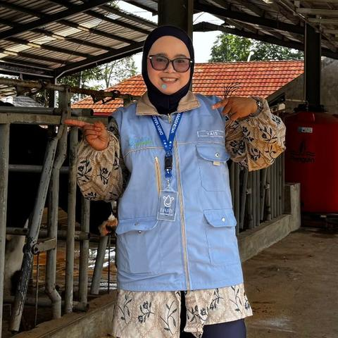
Aulia Syfa Unnisa
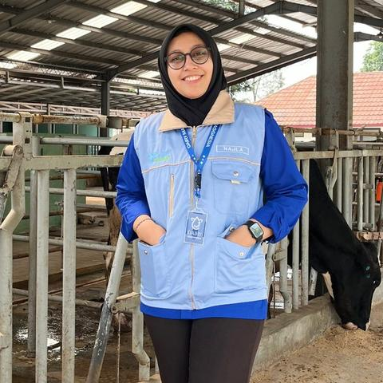
Najla Nur Shafa
Kolaborasi Kami
Riset Bertemu dengan Pengalaman Industri
Dairy Maggnesia dikembangkan melalui kolaborasi antara Sekolah Vokasi IPB University dan PT Spesialis Susu Indonesia.
Sekolah Vokasi IPB University
Berperan dalam penelitian dan pengembangan Dairy Maggnesia.
PT Spesialis Susu Indonesia
Mendukung pengembangan produk menuju penerapan dan hilirisasi di industri peternakan.

Dukungan Digital Peternakan
BisaTernak
BisaTernak adalah aplikasi digital untuk membantu peternak mencatat dan memantau aktivitas peternakan, mulai dari data ternak, produksi susu, pakan, kesehatan hingga keuangan.
Dalam pengembangan Dairy Maggnesia, BisaTernak direncanakan menjadi salah satu kanal digital yang menghubungkan informasi produk dengan kebutuhan pengguna.
Direncanakan sebagai kanal digital